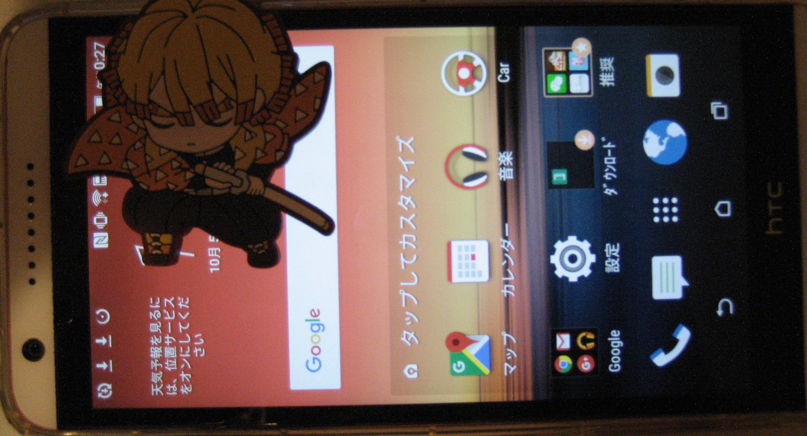

HTC Desire 820 Dual SIM (htc-a51dtul)
|  | |
| Manufacturer | HTC |
|---|---|
| Name | Desire 820 (Dual SIM) |
| Codename | htc-a51dtul |
| Released | 2014 |
| Category | testing |
| Original software | Android 4.4 |
| Hardware | |
| Chipset | Qualcomm Snapdragon 615 (MSM8939) |
| CPU | 4x 1.5GHz Cortex-A53 + 4x 1.0GHz Cortex-A53 |
| GPU | Adreno 405 |
| Display | 720x1280 SLCD |
| Storage | 16GB |
| Memory | 2GB |
| Architecture | aarch64 |
{kind=link}
| USB Networking | |
|---|---|
| Flashing | |
| Touchscreen | |
| Display | |
| WiFi | |
| FDE | |
| Mainline | |
| Battery | |
| 3D Acceleration | |
| Audio | |
| Bluetooth | |
| Camera | |
| GPS | |
| Mobile data | |
| SMS | |
| Calls | |
| USB OTG | |
| NFC | |
| Accelerometer | |
|---|---|
| Magnetometer | |
| Ambient Light | |
| Proximity | |
| Hall Effect | |
| Barometer | |
| Power Sensor | |
| Camera Flash | |
|---|---|
| Keyboard | |
| Touchpad | |
| USB-A | |
| HDMI/DP | |
| Ir TX | |
| Ir RX | |
| Stylus | |
| Haptics | |
| Ethernet | |
| FOSS bootloader | |
Contributors
Users owning this device
How to enter flash mode
In Power off state, use Volume- & power key to enter Hboot, and directly select the fastboot interface. Seems this fastboot interface can't use general fastboot for flashing partition, need to use another method to flash.
Installation
"The device must as S-OFF mode for installing custom kernel!"
lk2nd
It appears that using custom .dts as shown in MSM8916 Mainlining#lk2nd didn't succeed so far, lk2nd keeps showing unknown model. Prebuilt lk2nd-msm8916-appended-dtb.img flashed in HTC fastboot mode boots and seems to work. There are two issues though:
- After flashing the device will stay stuck in HTC fastboot. I've found two ways to get out of this state:
- Select HBOOT, choose recovery, then reboot into system.
- If the above is not possible (TWRP images seem scarce for this model) choose power down in HTC fastboot, plug charger, then once animated screen is shown hold power button. Phone should reboot into lk2nd.
- Button mapping is incorrect - volume up scrolls selection one way (possibly mapped as volume up), power scrolls another (possibly mapped as volume down), volume down does nothing. Haven't found a way to select an option.
- Running fastboot reboot in both HTC and lk2nd fastboot causes device to reboot into HTC fastboot and get stuck there.
UART
{kind=link}
One of pins in picture above behaves exactly like a Tx pin on Qualcomm device would (Serial_debugging#Finding_the_UART_ports_on_your_device.27s_main_board) - sits at 0V when device is off, goes to 0.9V during bootup (from power button press to vibration), then rises to 1.8V when phone is booted (into HBOOT) and stays there. Unfortunately I've destroyed the solder pad and am currently unable to check if that's indeed Tx.
Notes
- this device is named as Desire 820u (d820u), not d820s
- the system image is same as Desire 820 Single SIM, but device tree image is different.